项目背景

01.
业务背景
公司要求员工每月采用OKR的方式进行自我目标管理，并在月底进行目标实现情况的自我评价以及上级评价，最后进行评级，通过最终评级来确定当月绩效。
02.
业务问题
公司传统的OKR是通过员工填写表格然后再把表格打印出来再经由上级、HR、薪酬HR等来完成，过程繁琐、效率极低，并且不利于后期检索
03.
解决方案
开发嵌入到飞书的小牛OKR系统，实现OKR线上无纸化统计。
项目背景
OKR
OKR系统设计
OKR
ToB System
UI/UX
Interaction Design
OKR项目组工作流程


OKR项目组工作流程
设计前
产品洞察阶段
与业务方、产品经理产出产品需求文档
设计解决方案阶段
基于对产品与业务的深入理解，通过运用多种设计方法论进行研究分析，产出合适的视觉与交互设计方案。
设计走查阶段
跟踪线上还原效果，协助开发解决还原度问题。
设计中
设计后
战略层
范围层
结构层
框架层
表现层
OKR
ToB System
UI/UX
Interaction Design
从0到1上线期
从0到1上线期
阶段目标：深入理解业务，进行桌面调查，了解OKR工作法，梳理业务逻辑
拓展期
阶段目标：次要场景业务需求拓展，产品体验升级
OKR
OKR系统设计
OKR
ToB System
UI/UX
Visual Design

1
理解业务
3
次要场景需求
2
交互与视觉设计
4
体验升级

桌面调查—什么是OKR工作法？

桌面调查—什么是OKR工作法？
01.
定义
OKR工作法是一种通过设定挑战性目标（Objectives）和可量化关键结果（Key Results）来对齐团队方向、聚焦核心任务并衡量进展的目标管理方法。
02.
特点
聚焦
对齐
协同
责任追踪
公开透明
03.
实施
设定目标
部门O的设定
员工O的确定
明确KR
推进执行
定期回顾
桌面调查--竞品分析

桌面调查--竞品分析
Worktile
OKR
交互
页面布局
飞书OKR
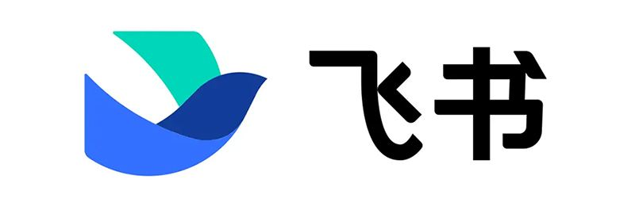
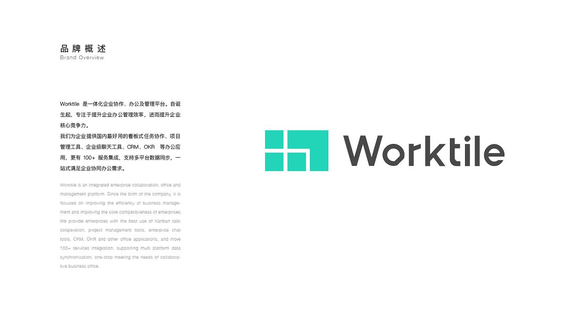
视觉
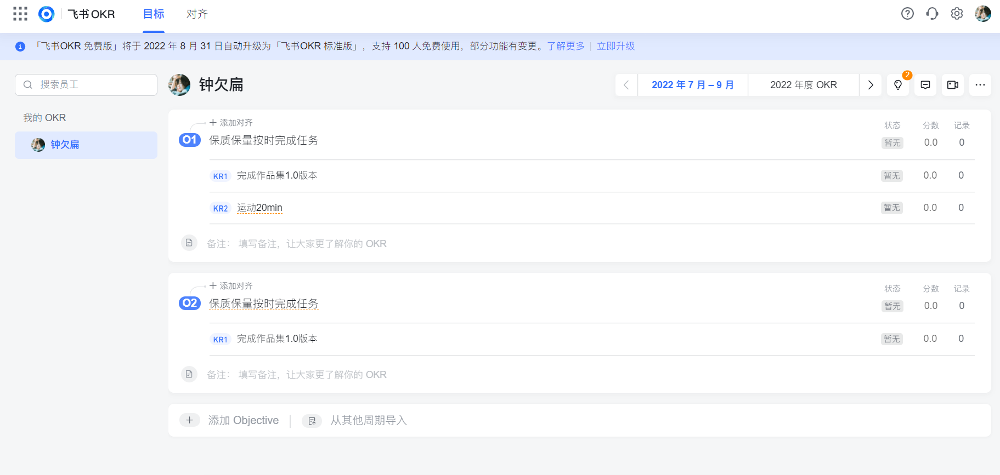
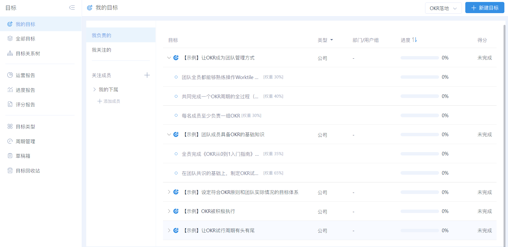
整体的视觉感受是简约、专业。符合OKR产品关注效率、高专业度的调性。
使用飞书品牌色蓝色（#3370FF)做为强调色，这是一种饱和度较高的蓝色，给人以专业、科技、高效的观感。
功能操作多采用简约干净的线性图标表示，辅以气泡解释图标功能。
添加OKR：新增按钮始终置于表格最下方，点击后在按钮上放新增一行，填写表单数据提交即可。
操作的表现形式：多采用图标表示，鼠标Hover可查看功能解释
添加OKR：新增按钮固定在表格上方操作区，点击新增跳出弹窗，填写表单中相关数据完成OKR编辑。
操作的表现形式：多采用文字+图标的形式
整体的视觉感受是简约、专业。
页面大量留白，使用一种饱和度较低的蓝色作为强调色
多采用简约干净的线性图标。
一级导航
一级导航
二级导航
二级导航
主功能区
主功能区
操作区
操作区
操作区
操作区
操作区
泳道图

泳道图
管理者(管理员)
申请者(员工)
审批者(领导、HRBP)
OKR制定阶段(月初)
阶段
用户
驳回
驳回
否
是
通过
通过
自评阶段(月底)
确认归档
开始
配置权限
制定OKR
自我评分
HRBP修改评级
HRBP确认归档
领导审批
领导审批
是否确认评级
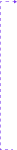
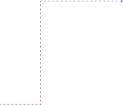
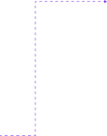
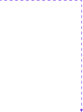
OKR从制定到自评再到最后的却仍归档整个审批流程的泳道图，涉及到员工、管理层、HRBP等用户角色，泳道图能更加清晰的表现这个过程。设计师亦可以在这个过程中找到机会点。
设计原则


设计原则
设计在“全局”层面上能够保持较好的相似性和规范性。一致性不仅可以保证产品设计的一致规范，还可以保证用户产品认知和使用体验的一致。降低学习成本。
OKR作为一款效率产品，功能相对复杂，在设计过程中应该遵循功能优先原则，避免过度设计。
在复杂系统中，信息的优先级显得尤为重要。可适当的收起一些不重要的信息。
对于OKR这种设计周期长，长期更新迭代的产品来说设计方案的可拓展性尤为重要。满足后续产品的发展规划需求。
01.
02.
03.
效率优先
清晰明了
一致性
设计过程中考虑设计方案能否落地，不能实现的设计方案是没有任何价值的。从实现性和成本性两个角度去思考。
04.
灵活配置
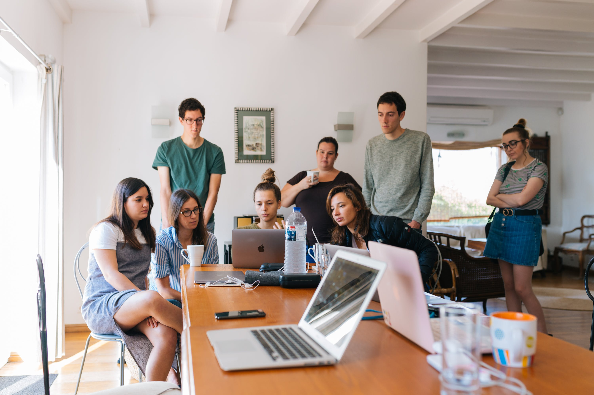
从0到1上线期
从0到1上线期
阶段目标：深入理解业务，进行桌面调查，了解OKR工作法，梳理业务逻辑
拓展期
阶段目标：次要场景业务需求拓展，产品体验升级
OKR
OKR系统设计
OKR
ToB System
UI/UX
Visual Design

1
理解业务
3
次要场景需求
2
交互与视觉设计
4
体验升级


PC端信息架构
PC端信息架构
小牛OKR
时间
帮助文档
我的
@我的消息
okr
人员列表
审批流
对齐视图
任务清单
数据报表
内容区
okr复盘
搜索
我的部门
我审核的
okr评级
我的
组织架构
我关注的
@我的和我@的
操作


Web端首页设计—搭建页面框架


OKR特点
基于OKR产品的特点选择垂直导航
功能模块多
频繁跨模块切换
专家型用户
层级复杂
多角色权限体系
效率优先
层级承载能力强
扩展性强
专家型用户
功能扁平
内容优先，最大化纵向空间
新手友好，学习成本低
支持高频切换
可配置性强
模块数量有限
Web端首页设计—搭建页面框架
左侧导航（垂直导航）
顶部导航（水平导航）
模块化设计
模块化设计
顶部信息栏
导航区
页面采用模块化设计思想，将复杂的功能拆解为职责清晰、可独立管理的功能模块，符合清晰明了的设计原则。
顶部信息栏承载全局性操作，包含产品标识、全局搜索、用户信息、消息提示等控件。顶部信息栏与下方导航区形成职责分离，降低了用户的认知负担。
主内容区
以卡片列表展示O/KR，由上方全局操作栏与下方OKR填写区组成。卡片化布局内容清晰明了；O和KR的填写采用统一交互形式，降低学习成本；与导航区、顶部栏形成清晰的分层。
内容区头部
展示审核时间轴、日期切换、OKR所属人。
用户可以明确OKR当前进度，这种可视化设计解决了用户“我的OKR到哪个阶段了”的焦虑，建立心理预期，降低不确定性
导航区采用垂直导航，包含“我的OKR”“我审核的”等模块。
导航区支持折叠，用户可收起低频信息，聚焦核心任务。


我的消息
HRBP确认
2020.11.16
自我评分
2020.11.18
上级评分
2020.11.20
5
进行中
未到时间
已完成
隐藏次要内容，聚焦主要任务
隐藏次要内容，聚焦主要任务
我的OKR
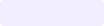
钟倩妮(扁扁)
未提交


钟嘻嘻(嘻嘻)
待审核
易烊千玺(千千)
已审核
刘呵呵(呵呵)
我审核的

李泽楷(小李子)
钟嘻嘻(嘻嘻)
我关注的
组织架构
柏原崇(鲍勃)
张凌赫(牛牛哥)
成毅(奇异)
红豆酱项目组（12）
李山钟(山人）
高桥一生(高桥)
我的部门
UI设计组（6）
视觉设计组（4）
钟倩妮(扁扁)
2020年1月
2020年2月
2020年3月
制定计划
HRBP确认
上级评分
上级确认
自我评分
HRBP确认
确认归档
2020.11.12
2020.11.16
2020.11.20
2020.11.14
2020.11.18
2020.11.22
2020.11.24
5
6
7
钟倩妮(扁扁)
2020年1月
2020年2月
2020年3月
折叠左侧导航区
左侧导航支持折叠，为主功能区释放空间，用户熟悉功能后可按需收起导航，实现从“功能导航”到“内容优先”的切换。
折叠OKR状态时间轴
审核时间轴让用户快速了解当前进度，但核心任务始终是填写和管理O/KR。时间轴支持折叠，用户可将其隐藏，避免低频信息占用主内容区。
隐藏不常用功能
每一个O或者KR都有删除功能，删除设计成Hover显示，可以减少页面的复杂度，提升体验。
一致性原则，减少学习成本

一致性原则，减少学习成本
一致的交互操作
添加O或KR，采用相同的布局与交互方式，降低了用户的学习成本。
一致的信息结构
每个O和KR卡片都包含描述、对齐对象、周期、权重、进度五个信息字段，采用相同的布局顺序。用户扫描任一卡片都能快速找到所需信息。
一致的控件
添加、折叠、输入框等操作均采用一致的控件，用户操作任意模块的相同操作，都能获得相同的反馈和结果，减少用户学习成本，提升操作效率。
OKR System Design
提升产品易用性，效率优先
查看@我的OKR去与他对齐
去与他对齐
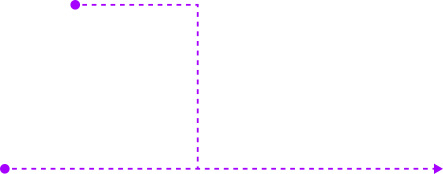
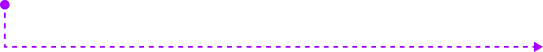
状态可视化，减少不确定性
审核时间轴展示OKR从制定到归档的完整流程。这种进度可视化消除了“我的OKR到哪了”的焦虑，降低了流程中的不确定性。
就地编辑，避免认知中断
添加或编辑O/KR时直接在当前位置输入，而非跳转新页面。避免了上下文切换带来的认知中断，保持工作流的连续性。
罕见功能添加使用说明
我们使用鼠标Hover出现气泡说明的设计方法，为功能添加使用说明，有效提升产品易用性。
灵活配置，提升效率
模块可自由拖动，提升用户编辑效率。
设计规范
设计规范
菜单栏（80px）
内容区
日期tab（58px）
信号栏（20px）
40px
40px
标题栏（44px）
操作栏（50px）
由我的OKR与同事OKR组成
OKR的主要内容，以信息流方式展示。
OKR以月为单位统计，最多显示最近6个月的OKR。
由于飞书H5的限制，标题栏只可以对标题进行修改，无法在此区域添加功能。
此区域主要存放OKR审批当前阶段的主要操作，以及OKR的评分评级

页面框架（1倍图尺寸）
设计规范由设计原则、设计语言和组件库构成，在设计原则的指导下使用设计语言和组件库创建体验一致的用户界面。
从0到1上线期
从0到1上线期
阶段目标：深入理解业务，进行桌面调查，了解OKR工作法，梳理业务逻辑
拓展期
阶段目标：次要场景业务需求拓展，产品体验升级
OKR
OKR系统设计
OKR
ToB System
UI/UX
Visual Design
1
理解业务
3
次要场景需求
2
交互与视觉设计
4
体验升级

从0到1上线期
从0到1上线期
阶段目标：深入理解业务，进行桌面调查，了解OKR工作法，梳理业务逻辑
拓展期
阶段目标：次要场景业务需求拓展，产品体验升级
OKR
OKR系统设计
OKR
ToB System
UI/UX
Visual Design
1
理解业务
3
次要场景需求
2
交互与视觉设计
4
体验升级